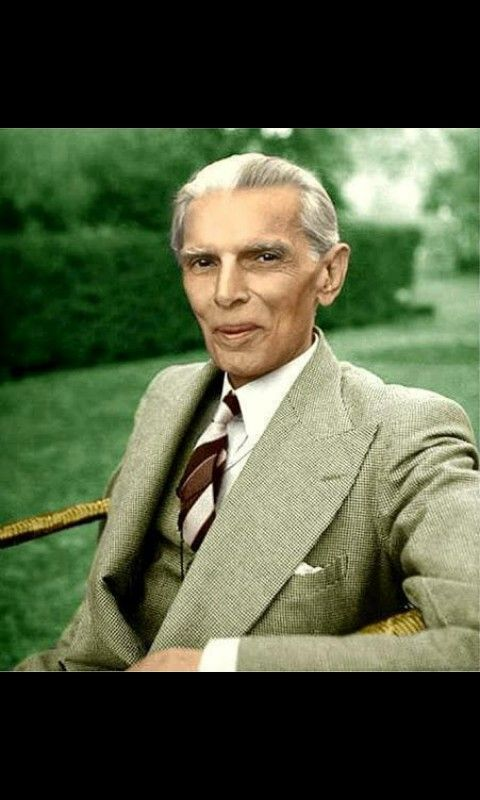

Muhammad Ali Jinnah (1876 - 1948), also known as Quaid-e-Azam, was a lawyer, politician, and the founder of Pakistan. He was a leader of the All-India Muslim League and Pakistan's first governor-general. Early life: Born in Karachi on December 25, 1876 Educated at the Sindh Madrassat-ul-Islam and the Christian Mission School Became the youngest Indian to be called to the Bar in 1896 Rose to prominence as a lawyer in Bombay Political career: Joined the Indian National Congress in 1905 Helped shape the 1916 Lucknow Pact between the Muslim League and the Indian National Congress Left the Congress Party in 1920 due to his opposition to Mahatma Gandhi's noncooperation movement Led the All-India Muslim League from 1913 until Pakistan's independence in 1947 Legacy: Served as Pakistan's first governor-general from 1947 until his death in 1948 Known for his integrity, honesty, and dedication to service His efforts led to the creation of a separate homeland for Muslims, ultimately resulting in the formation of Pakistan